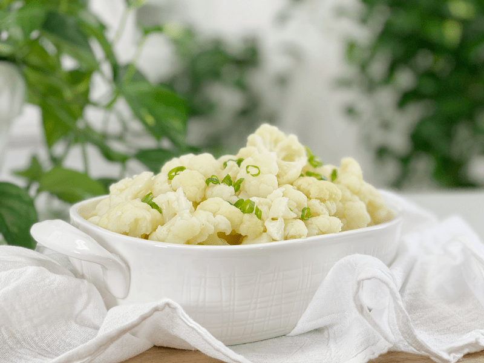
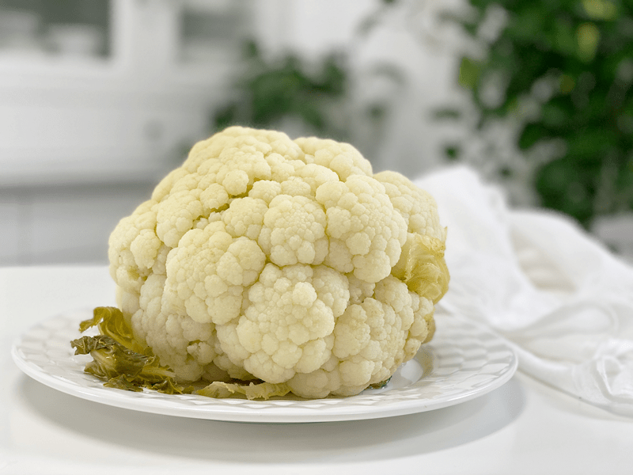

A whole head of steamed cauliflower is great for slicing into cauliflower steaks, chopping into florets, or whipping into a creamy cauliflower mash! It is low carb, low calories, high fiber, filled with vitamins and minerals and is also a great source of antioxidants. So, regardless of how you serve it, you can rest assured that it is filled with good-for-you nutrients!

As you know, I am a firm believer in the power of raw foods, but I have no qualms in cooking some of them as well. Our daily menu doesn’t have to have a label, nor does it have to fit some standard guidelines. However or whatever you choose to eat, do it out of health and love for yourself. Often, we get all caught up in just wanting to lose weight. I have been there many times myself and usually, it has backfired in some form or fashion. So, now, instead of focus on losing, I focus on gaining…HEALTH!
Only you know what works for YOU, and if you’re still trying to figure that out…that’s okay too. Throughout the process, the only thing I ask of you is not to force yourself into some form of eating that doesn’t suit your body’s needs. For instance, if you suffer from gastrointestinal distress (gas and bloating) yet love cruciferous veggies (cauliflower, broccoli, Brussels sprouts, etc) I would suggest cooking them to help reduce any digestive discomfort.
These types of veggies are high in fiber and when eaten raw, they might not break down easily during digestion. So if you have any issues eating raw vegetables, give them a quick cook! Sauté, roast, blanch, or steam — whichever method you choose to use to cook your vegetables will help them move more easily through your system.

Here is a whole steamed head of cauliflower!
Cooking Tips and Tricks
To avoid mushy cauliflower florets, steam the whole head in one fail-proof swoop. With this method, you cut it up AFTER it is cooked. If you own an Instant Pot (and hopefully you do, since you landed on this recipe technique) you should invest in a steamer basket. I got this steamer basket from Amazon for roughly $20. I used to use the trivet that came with the unit, but I burned myself more often than not when trying to remove my cooked veggies.
When using the streamer function, you must use something to set the veggies on–a trivet or steamer basket–because the bottom of the pot gets hotter than when you use the regular manual/pressure cook function. We don’t want to burn our cauliflower… imagine that mess!
Optional Flavorings
The recipe/technique that I am sharing with you is VERY basic. I tend to do this for various reasons. First off, I love to batch cook (time saver) so I like to make my cauliflower, rice, oats, etc. plain. That way I can dress them up with different flavorings throughout the week. For instance, we love savory cauliflower mash, but I also enjoy a bowl of mashed cauliflower with a splash of coconut milk, a few drops of stevia, and a mad dash of cinnamon. That’s not to say that I don’t season my foods while cooking them, it just depends if I am cooking for the week or for just one meal. Here are a few ideas to awaken your taste buds!
- If you don’t have any qualms about using healthy fats when cooking, rub the cauliflower head with olive oil and sprinkle with salt and pepper. Proceed with the cooking technique below.
- Rub the cauliflower head with olive or coconut oil, then coat it with a mixture of 1 clove minced garlic, 1 tsp grated lemon zest, 2 Tbsp dried parsley, 1/4 tsp sea salt, and 1/4 tsp ground black pepper.
- Proceed with the cooking technique below.
- Rub the cauliflower head with the following mixture: 1 Tbsp avocado oil; 1/2 lemon, juiced; 2 cloves minced garlic; 2 tsp fresh thyme leaves; 1 tsp salt; and 1 tsp smoked paprika. Proceed with the cooking technique below.
- 2 cups water
- 1 whole head cauliflower